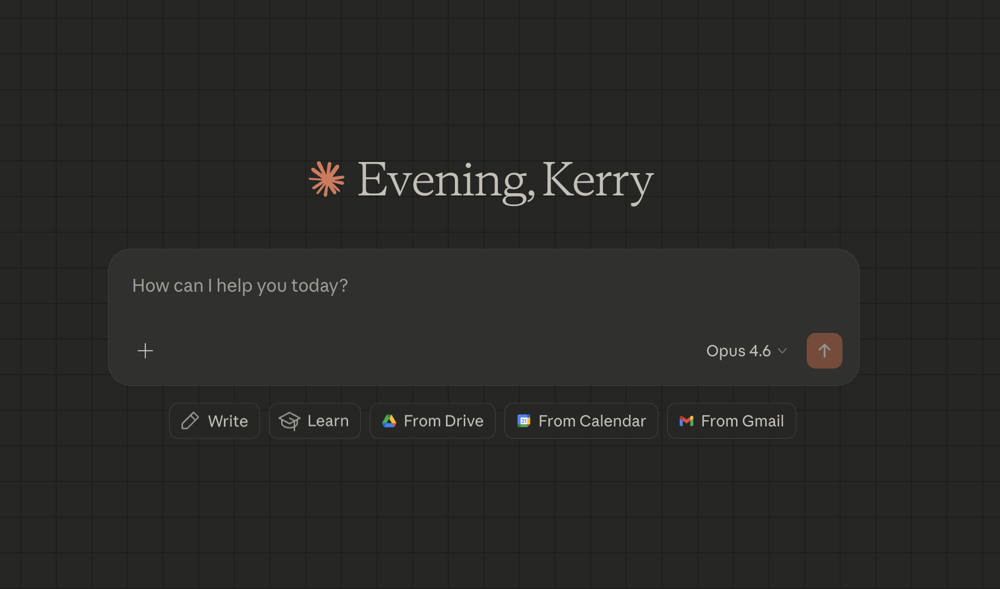
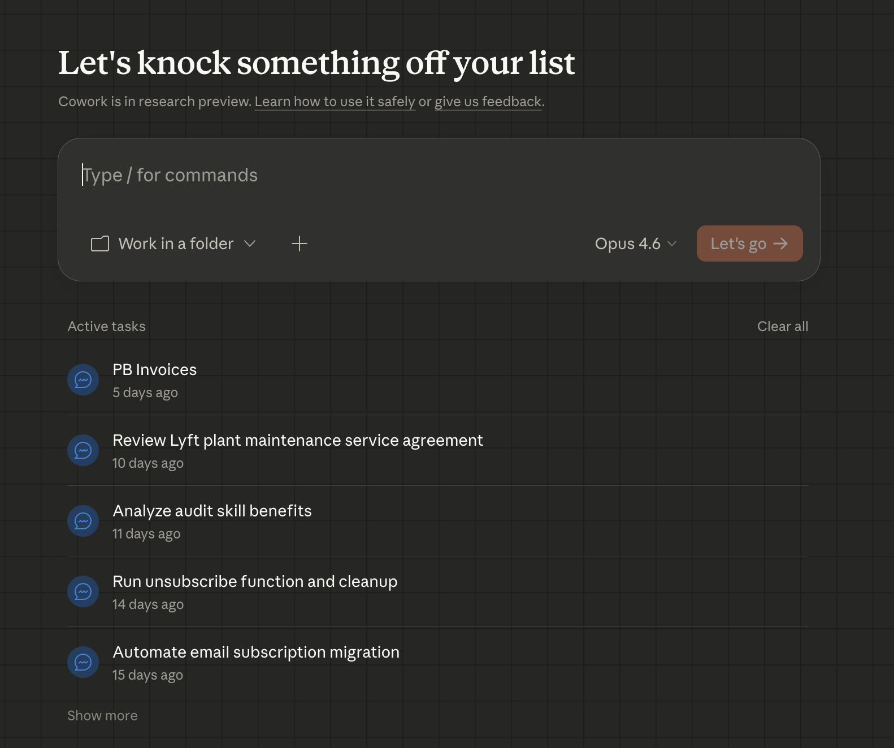
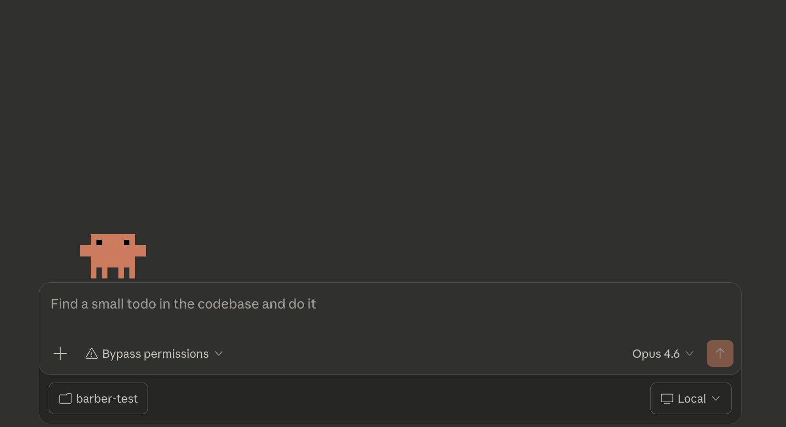

01
Connect to everything.
Gmail, Calendar, Slack, CRM, ticketing systems, databases, shared drives. You describe what you want connected. No middleware. No dev team.
AI employees connected to your systems, running on your data, delivering finished work — while your team does the thinking only they can do.
An army of thinkers and an army of doers. Deploy as many as you need, simultaneously.
Same people, ten times the output. The output shifts to the higher-leverage work that clients pay for.
Every workflow you build stacks. Six months from now, the distance is uncatchable.
Deploy as many as you need. On as many problems as you need. Simultaneously.
Researchers smarter than almost anyone on almost any subject. Strategy, compliance, architecture, competitive analysis — at depth that takes your best people days.
They think.
They research. Pull data. Cross-reference. Build reports. Check compliance docs. Draft the brief. Come back with finished work product.
They do.
You are never writing code. You are never learning a new tool. You are having a conversation.

Chat.

Chat.

Chat.
Plain English, in any permutation. The only thing that changes is
how much you connect and how many bees you deploy.
One PhD. One conversation. The intelligence is real. But it is just a conversation partner.
Every chat starts from zero. It doesn't know who you are.
Can't reach your files, your data, your systems. Only what you paste.
Can't open email, pull a report, update a ticket, or build anything.
A PhD with no desk, no files, and no hands. This is where most people stop.
Same chat. Same plain English. But now those PhDs and worker bees can connect to anything, anywhere — and do things with what they find.
It sees your screen, reads your documents, clicks buttons, fills forms, extracts data. You describe a task, it does the task.
One bee, one task. Guided by you.
No limits on what it reaches, how many it deploys, or what it builds. You describe what you want. It plans, coordinates, and delivers finished work.
Many bees, many tasks. Autonomous.
Gmail, Calendar, Slack, CRM, ticketing systems, databases, shared drives. You describe what you want connected. No middleware. No dev team.
Call transcripts, email threads, PDFs, Slack history, meeting notes. It reads, cross-references, and extracts what matters — without you organizing anything first.
Reports, dashboards, briefs, spreadsheets, email drafts, database entries. PhD-level synthesis, polished and ready to act on.
Skills. Scheduled tasks. Monitoring loops. Remote and voice. It works whether you are at your desk or not.
It knows your clients, projects, history, decisions. Cross-referenced. Compounding. Not a generic AI — your AI, with your context.
From “a tool I use” to “infrastructure that runs.”
Teach a routine once. Anyone deploys it with one command. Competitive audits, compliance checks, meeting prep — institutional playbooks that execute themselves.
Bees on a clock. “Every Monday at 7am, pull last week’s data and draft a summary.” Set it once. It runs every week. Nobody remembers to do it.
Bees that watch. Check feeds, pricing pages, CVE databases — every 10 minutes. Continuous monitoring without continuous attention.
Talk to it from your phone, your car, by voice. “Flag any incidents from overnight” while you make coffee. Not chained to a laptop.
Same people. Same roles. Radically different output.
Creative brief from a call transcript
1.5 hours → 10 min
Incident postmortem write-up
2 hours → 15 min
Vendor proposal comparison matrix
4 hours → 20 min
Client status email from project tracker
45 min per client → 5 min
Full competitive audit
5 days → 4 hours
Compliance gap analysis against framework
3 weeks → 2 days
Pre-pitch client intelligence dossier
1 day → 1 hour
Incident correlation across log sources
4 hours → 20 min
Continuous competitive intelligence
Quarterly manual → always on
Automated threat intel briefing
1–2 hrs/day analyst time → zero
Compliance continuous monitoring
Annual panic → always audit-ready
Campaign-to-results learning loop
No systematic learning → compounding
Each tier funds the next through saved time and demonstrated value.
Not a quarterly report. A living system that watches, learns, and briefs your strategists before they even ask.
A strategist spends 5 days researching 5–6 competitors manually.
Pull websites. Screenshot ads. Scan social. Read press. Catalogue campaigns. Write the report.
By the time it’s presented, it’s already stale.
Nobody tracks competitors between reviews. You find out what they did after the client tells you.
Teach the audit once as a skill. Run it against any competitor set, any category, any market. Same command.
Scrape websites, ad libraries, social feeds, job postings, press releases. Analyze positioning, messaging, campaign themes.
Schedule it. Monday morning, your team gets a digest: “Competitor X shifted from value to premium. Launched 3 new campaigns targeting 25–34. Posted 2 data analytics jobs.”
5 days → 4 hours. Then it runs itself, every week, forever.
Not a template. Institutional memory that compounds with every RFP you win — or lose.
Past RFP responses, case studies, capability statements, team bios, pricing models, win/loss records and why. All indexed, all searchable.
Claude reads the full brief. Maps requirements to FUSE capabilities. Pulls the 3 most relevant case studies. Drafts tailored responses section by section. Flags gaps where new content is needed.
Win or lose, feed the result back. Over time: which positioning works for CPG vs QSR vs financial. Which case studies resonate. What the winning formula looks like, by category.
3–5 days of assembly → first draft in 2 hours. A junior strategist on their first RFP has the institutional knowledge of every pitch FUSE has ever run.
One of my favourite things to turn on — a custom pitch crafted from previous pitches and the transcript of the call you just got off. Ready in ten minutes.
Your media team spends more time pulling data than reading it. Flip that ratio.
Meta Ads, Google Ads, DV360, programmatic platforms, client-specific tools. Every client is a different combination.
Someone exports from 4–6 platforms. Normalizes the data. Builds pivot tables. Writes the insights. Makes the deck.
1–2 days per client, per month. Multiply by your client count.
API-connected platforms: scheduled pull, auto-normalized, report drafts itself Monday morning.
Manual-export platforms: drop the CSV. Claude normalizes, cross-references, identifies what’s working and what’s not, writes the narrative.
Your media planners spend their time on strategy and recommendations — not assembly.
Next step: 90 minutes with your media lead. We map every data source, identify what’s automatable, and build version one for your highest-volume client.
My personal AI infrastructure. CRM, communication intelligence, project tracking, decision journal — all connected, all running on my data, all controlled through conversation.
Every contact, every interaction, every email — cross-referenced automatically. It knows who I talked to, what we discussed, and what I committed to.
Call transcripts analyzed for talk ratios, commitments, coaching insights. Gmail and Calendar synced and linked to contacts. Nothing falls through.
Scheduled syncs, health monitoring, auto-generated briefings. Morning routine, meeting prep, nudges — it runs whether I’m there or not.
Task tracking, milestones, decision journals with outcomes. Cross-linked to contacts and conversations. Full institutional memory.
No screens to learn. No dashboards to check. I talk to it. “Who haven’t I spoken to in two weeks?” “Prep me for my 2pm.” It just works.
Every interaction makes it smarter. Relationship depth, communication patterns, project history — context that compounds over months, not resets every session.
I don’t just sell this. I live in it. This is what AI infrastructure looks like when it’s built, running, and compounding. Everything I’m proposing to you — I’ve already built for myself.
Deploy multiple researchers across every source that matters. They come back with a unified intelligence picture.
What real users are saying. Complaints, comparisons, migration stories. Unfiltered signal.
G2, Capterra, TrustRadius. Sentiment analysis, feature gaps, competitive positioning from buyers.
What people are searching for. Keyword gaps, content opportunities, competitive share of voice.
Pricing, market share, industry reports. Competitive tier benchmarking and monetization signals.
Content analysis, comment sentiment, thought leadership positioning across the category.
Cross-reference everything. Surface patterns no single source reveals. Deliver one unified brief.
Deployed 6 research agents across 10 competitors in email marketing. Reddit listening, review analysis, SEO audits, pricing benchmarks, market data, business intelligence. Months of analyst work. Done in days.
View live dashboard →These aren’t dashboards you check. They’re agents you deploy. Tell them what to look at, they go look, they come back with findings. Run them once or schedule them to listen continuously.
Not a team. Not an agency sprint. Me, with these tools.
Repositioned an entire SaaS company
Competitive research, social listening, thousands of pages assessed. Found the gaps between what customers ask for and how the company talks. New positioning from scratch.
80 pieces of finished creative
20 homepage variants, 20 landing pages, 20 email campaigns, 20 marketing campaigns. Not outlines — finished work.
Rewrote a quarter’s OKRs
Replaced three-week processes with three-hour processes. Generated all plans, materials, and learning guides.
This deck + 3 websites + Google Suite
Crafted the content, Claude Code built the slides. Three other sites launched. Full Google Drive and Docs integration added to my platform.
Automated outbound lead engine
Scrapes Google Maps for businesses without websites. Builds them a site, publishes on Netlify, finds contact info, writes the outreach with the live site attached.
Hackathon idea → working product
Friday afternoon concept became a functional product pulling real data from their analytics suite and Snowflake. Real-time CX messaging from individual user actions.
Full business case for a co-product pitch
Entire business case for a joint product — strategy, positioning, financials. Ready to present.
8 tools for podcast hosts I’ve never met
Listened Thursday. Built 8 working tools from what they discussed. Sending tomorrow — “I heard you talking about this, so I built it.”
Also shipping by Tuesday: Meta ads analyzer & ad creator, competitor social listening system, OKR & MBR automation, instant sales responder. All for different clients. All from conversations this week.
PhD-level
intelligence
An endless army
of workers
Your context,
knowledge & data
A harness that
tells it how to work
Speed.
Quality.
Reliability.
Everything you’ve just seen connects. Each piece makes the others stronger.
One competitive audit runs. One pain point gets fixed. Hours saved immediately.
That audit runs itself weekly. RFP drafts pull from a growing knowledge base. Reporting assembles overnight.
Competitive intel feeds pitch prep. Call transcripts improve proposals. Each system makes the others smarter.
It’s infrastructure. Running, learning, compounding — whether anyone’s watching or not.
And it’s distributable. Every skill, every workflow, every piece of institutional knowledge — shared across your entire org, instantly. A new hire on day one has the same capabilities as someone who’s been there five years.
SSO & SCIM — your IT controls access
Audit logs — every action traced
Custom data retention controls
Compliance API — programmatic monitoring
Google, Slack, Microsoft 365 connectors
Starting point
Team plan — $25/seat/month
With Code access
Premium — $100–150/seat/month
Full enterprise
Usage-based · Custom pricing
Compare to one junior hire.
Start from the outcome. Map backwards to what’s slow, what’s painful, what’s costing time. Three questions:
What’s something that’s blocking you?
What’s something you find annoying?
What’s something repetitive or boring?
Workflows — the actual steps people take. The workarounds, the manual steps, the things that are slow or costly.
Tools & data — where information lives, where it’s duplicated, where it’s missing. What connects and what doesn’t.
A prioritized list — ranked by impact and effort. “Start here, then here, then here.”
A working version — not a recommendation. Something built and running before we’re done.
Starts from a pain point. Rapid fix — within hours — to demonstrate value. Then build from there.
Something that's frustrating. Or mind-numbing. Or repetitive.
That's it. That's the starting point.
I paint the picture of what's possible. I build version one. You run with it.
Build a competitive intelligence system for one active client. Your strategists feel the difference on the next brief.
Connect it to one operational pain point. Incident summaries, compliance checks, or change review. Hours saved in two weeks.
The gap compounds daily.
Today is the smallest it will ever be.